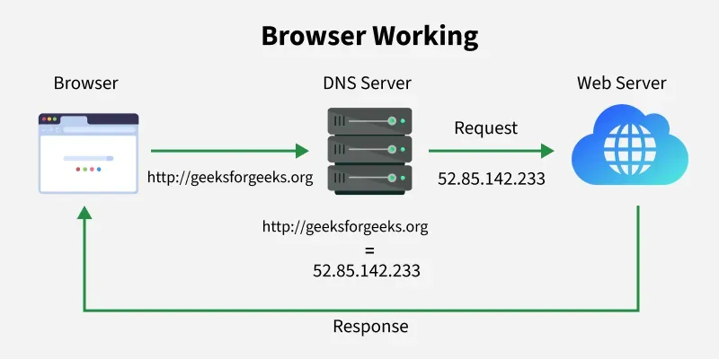

Web Servers

A web server is a computer or software that stores website files and delivers them to users when requested.
How It Works
When a user enters a URL, the browser sends a request to the server. The server processes the request and sends back the webpage.
Examples
- Apache
- Nginx
Importance
Web servers make websites accessible on the internet.